JJAS rainfall domain review jjas_chirps_domain_review_v1
CHIRPS v3.0 (0.05 deg monthly, 0.25 deg block mean) 1993–2025 · built 2026-10-10T23:38:21+00:00 · fingerprint 8186be2d0d14
Selected candidate: none yet. The review shows the evidence; a domain is exported only after an explicit selection.
1. Climatology
Ratio of climatological means from actual-calendar monthly totals (February 29 included); every year of the period required per cell.
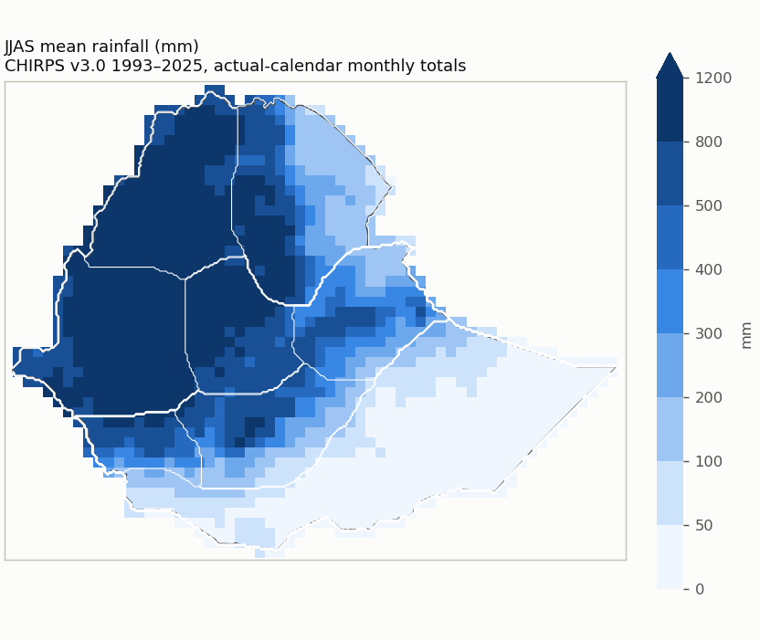
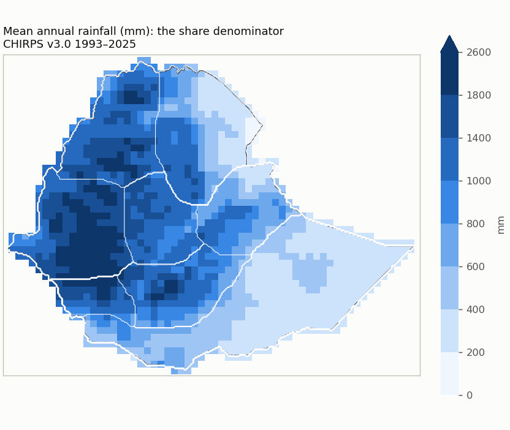
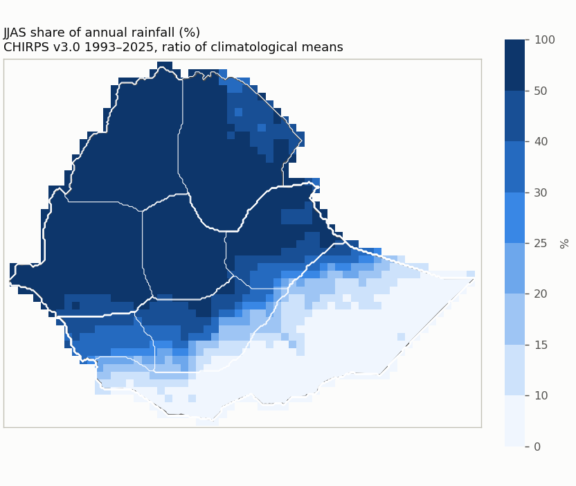
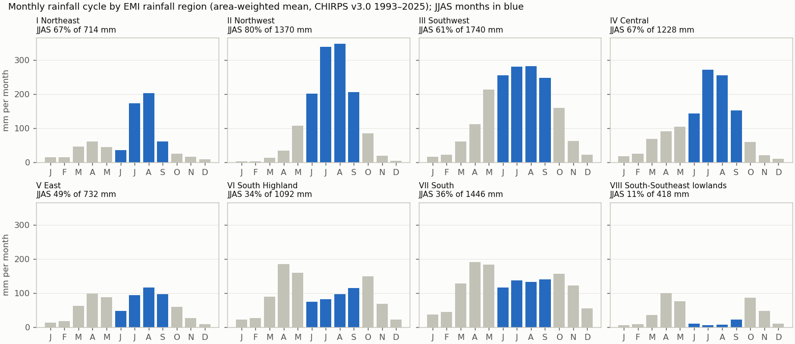
Reference periods
| Period | Status | Note |
|---|---|---|
| 1993-2025 | available | |
| 1981-2010 | unavailable | 12 of 30 years are not in the data (1981-1992); the period is not shortened. |
| 1991-2020 | unavailable | 2 of 30 years are not in the data (1991-1992); the period is not shortened. |
| 1996-2025 | available |
Quality control
| Check | Result | Detail |
|---|---|---|
| Calendar | passed | Not applicable: the cache holds the published monthly totals (calendar months, February 29 included as published); there is no daily cycle. |
| Units | mm | mm (monthly accumulation of daily mm amounts; no rate conversion) |
| Years | 1993–2025 (33) | gaps: none |
| Completeness | 0 cells | Cells touching Ethiopia whose CHIRPS record is not complete for every year and month. |
| Area | 1,129,938 km² | 3.6 km² beyond the grid; cell bounds intersected with the Ethiopia polygon, WGS84 geodesic areas |
| Source | CHIRPS v3.0 (0.05 deg monthly, 0.25 deg block mean) | sha256 17a229d0813d23f4… |
| Nested candidates | yes | raising either cutoff never adds a cell |
2. References
Registered EMI climatology panels (climatologies printed in a 2026 publication; their averaging period is not documented). The comparison mode follows the evidence: drafts stay visual only.
| Reference | Mode | Why not higher | Digitization | Outline IoU | Control / check RMSE (km) | Document |
|---|---|---|---|---|---|---|
| emi_kiremt_map_2e | visual_only | georeferencing and legend classes not reviewed | draft | 0.997 | 5.4 / 6.9 | b0282006170b |
| emi_kiremt_map_3e | visual_only | georeferencing and legend classes not reviewed | draft | 0.99 | 6.8 / 6.4 | b0282006170b |
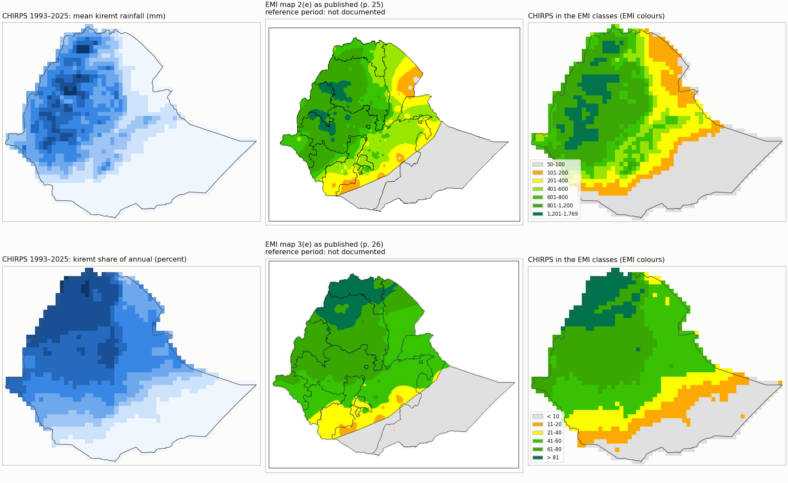
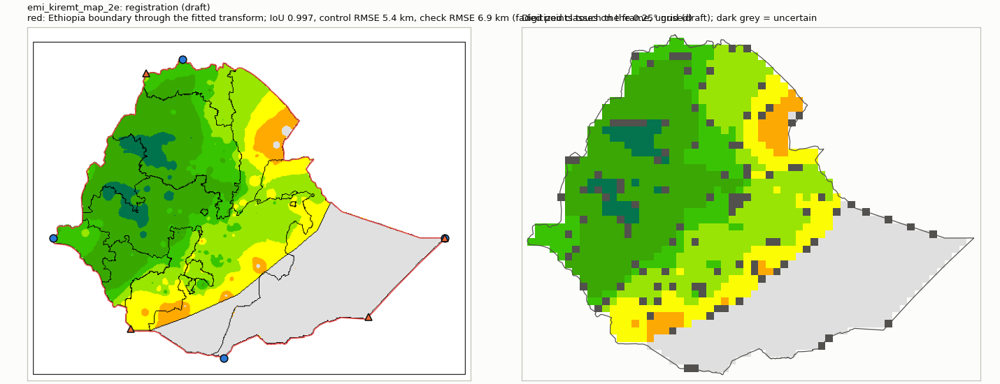
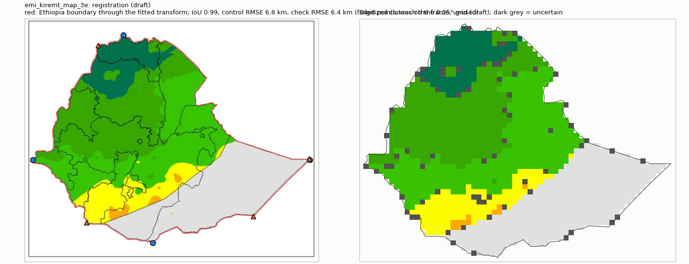
3. Candidate domains
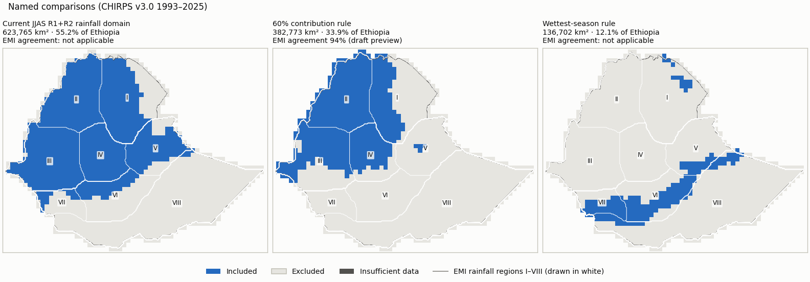
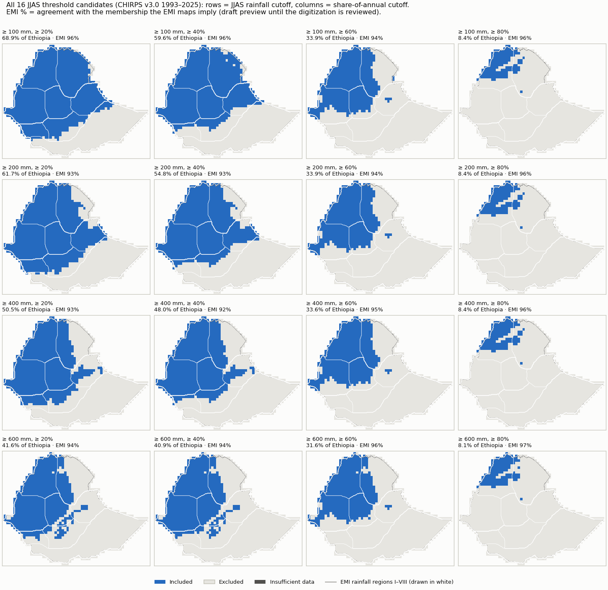
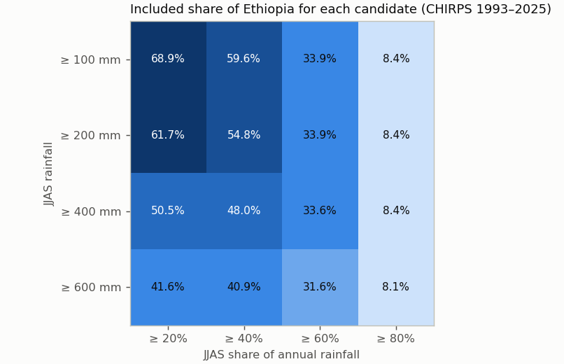
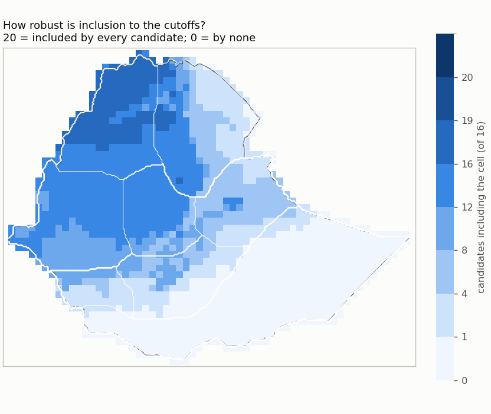
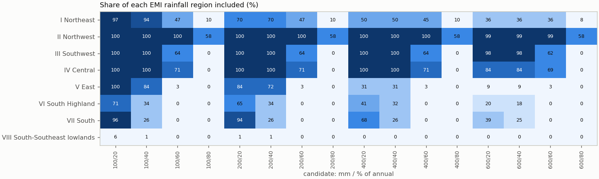
| Candidate | mm | % of annual | Included km² | % of Ethiopia | Unknown km² | Agreement with EMI-implied membership | Baseline change | Files |
|---|---|---|---|---|---|---|---|---|
| mm100_share20 | ≥ 100 | ≥ 20 | 778,548 | 68.9 | 4 | 96% (visual_only (draft preview)) | 1981-2010: unavailable; 1991-2020: unavailable; 1996-2025: +3,279/−0 km² | NetCDF · GeoJSON |
| mm100_share40 | ≥ 100 | ≥ 40 | 672,972 | 59.6 | 4 | 96% (visual_only (draft preview)) | 1981-2010: unavailable; 1991-2020: unavailable; 1996-2025: +5,552/−0 km² | NetCDF · GeoJSON |
| mm100_share60 | ≥ 100 | ≥ 60 | 383,032 | 33.9 | 4 | 94% (visual_only (draft preview)) | 1981-2010: unavailable; 1991-2020: unavailable; 1996-2025: +3,029/−0 km² | NetCDF · GeoJSON |
| mm100_share80 | ≥ 100 | ≥ 80 | 95,243 | 8.4 | 4 | 96% (visual_only (draft preview)) | 1981-2010: unavailable; 1991-2020: unavailable; 1996-2025: +2,248/−1,502 km² | NetCDF · GeoJSON |
| mm200_share20 | ≥ 200 | ≥ 20 | 697,150 | 61.7 | 4 | 93% (visual_only (draft preview)) | 1981-2010: unavailable; 1991-2020: unavailable; 1996-2025: +2,282/−0 km² | NetCDF · GeoJSON |
| mm200_share40 | ≥ 200 | ≥ 40 | 619,345 | 54.8 | 4 | 93% (visual_only (draft preview)) | 1981-2010: unavailable; 1991-2020: unavailable; 1996-2025: +4,565/−0 km² | NetCDF · GeoJSON |
| mm200_share60 | ≥ 200 | ≥ 60 | 382,773 | 33.9 | 4 | 94% (visual_only (draft preview)) | 1981-2010: unavailable; 1991-2020: unavailable; 1996-2025: +3,029/−0 km² | NetCDF · GeoJSON |
| mm200_share80 | ≥ 200 | ≥ 80 | 95,243 | 8.4 | 4 | 96% (visual_only (draft preview)) | 1981-2010: unavailable; 1991-2020: unavailable; 1996-2025: +2,248/−1,502 km² | NetCDF · GeoJSON |
| mm400_share20 | ≥ 400 | ≥ 20 | 570,923 | 50.5 | 4 | 93% (visual_only (draft preview)) | 1981-2010: unavailable; 1991-2020: unavailable; 1996-2025: +2,294/−0 km² | NetCDF · GeoJSON |
| mm400_share40 | ≥ 400 | ≥ 40 | 542,463 | 48.0 | 4 | 92% (visual_only (draft preview)) | 1981-2010: unavailable; 1991-2020: unavailable; 1996-2025: +2,292/−0 km² | NetCDF · GeoJSON |
| mm400_share60 | ≥ 400 | ≥ 60 | 379,773 | 33.6 | 4 | 95% (visual_only (draft preview)) | 1981-2010: unavailable; 1991-2020: unavailable; 1996-2025: +2,280/−0 km² | NetCDF · GeoJSON |
| mm400_share80 | ≥ 400 | ≥ 80 | 95,243 | 8.4 | 4 | 96% (visual_only (draft preview)) | 1981-2010: unavailable; 1991-2020: unavailable; 1996-2025: +2,248/−1,502 km² | NetCDF · GeoJSON |
| mm600_share20 | ≥ 600 | ≥ 20 | 470,103 | 41.6 | 4 | 94% (visual_only (draft preview)) | 1981-2010: unavailable; 1991-2020: unavailable; 1996-2025: +0/−717 km² | NetCDF · GeoJSON |
| mm600_share40 | ≥ 600 | ≥ 40 | 462,455 | 40.9 | 4 | 94% (visual_only (draft preview)) | 1981-2010: unavailable; 1991-2020: unavailable; 1996-2025: +764/−717 km² | NetCDF · GeoJSON |
| mm600_share60 | ≥ 600 | ≥ 60 | 357,334 | 31.6 | 4 | 96% (visual_only (draft preview)) | 1981-2010: unavailable; 1991-2020: unavailable; 1996-2025: +1,519/−717 km² | NetCDF · GeoJSON |
| mm600_share80 | ≥ 600 | ≥ 80 | 91,373 | 8.1 | 4 | 97% (visual_only (draft preview)) | 1981-2010: unavailable; 1991-2020: unavailable; 1996-2025: +748/−1,502 km² | NetCDF · GeoJSON |
Named comparisons
| Rule | Included km² | % of Ethiopia | Agreement with EMI-implied membership | Files |
|---|---|---|---|---|
| Current JJAS R1+R2 rainfall domain: R1/R2 membership, JJAS >= 120 mm and >= 20% of annual | 623,765 | 55.2 | Regime membership is not an amount/share threshold, so EMI classes imply no membership for it. | NetCDF · GeoJSON |
| 60% contribution rule: JJAS >= 60% of annual and >= 200 mm (no cleanup) | 382,773 | 33.9 | 94% (visual_only (draft preview)) | NetCDF · GeoJSON |
| Wettest-season rule: JJAS wetter than FMAM and ONDJ, >= 100 mm (no cleanup) | 136,702 | 12.1 | Wettest-season membership compares JJAS with FMAM and ONDJ; the EMI maps give no FMAM/ONDJ amounts. | NetCDF · GeoJSON |
Domain files: one NetCDF (membership codes: 1 included, 0 excluded, -1 insufficient data, -2 outside Ethiopia) and one GeoJSON outline (cells clipped to the border) per domain, in domains/. They are review candidates, not operational masks.
4. Assessment
Reference agreement
| Reference | Mode | Exact class | Within one class | CHIRPS wetter / drier | Outside-interval median / p90 | Comparable / uncertain area |
|---|---|---|---|---|---|---|
| emi_kiremt_map_2e | visual_only (draft preview) | 68% | 96% | 17% / 15% | 4.3 / 126.6 mm | 1,033,891 / 76,084 km² |
| emi_kiremt_map_3e | visual_only (draft preview) | 76% | 98% | 12% / 12% | 0.0 / 4.7 pp | 1,067,462 / 44,901 km² |
Agreement with EMI-implied membership counts only area where the EMI class lies entirely on one side of a cutoff (half a legend unit tolerance); straddling classes are undecided, never guessed.
Largest changes between neighbouring cutoffs
| From | To | Changed cutoff | Area switching |
|---|---|---|---|
| mm100_share40 | mm100_share60 | annual share percent | 289,940 km² |
| mm100_share60 | mm100_share80 | annual share percent | 287,789 km² |
| mm200_share60 | mm200_share80 | annual share percent | 287,530 km² |
| mm400_share60 | mm400_share80 | annual share percent | 284,530 km² |
| mm600_share60 | mm600_share80 | annual share percent | 265,961 km² |
| mm200_share40 | mm200_share60 | annual share percent | 236,572 km² |
| mm400_share40 | mm400_share60 | annual share percent | 162,691 km² |
| mm200_share20 | mm400_share20 | seasonal rainfall mm | 126,227 km² |
| mm100_share20 | mm100_share40 | annual share percent | 105,576 km² |
| mm600_share40 | mm600_share60 | annual share percent | 105,120 km² |
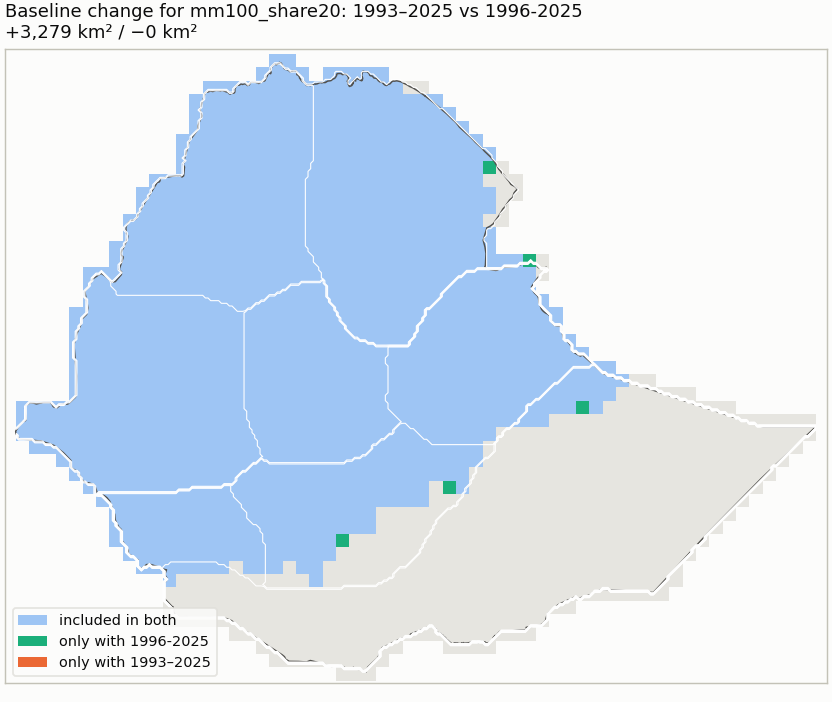
Dataset sensitivity: not assessed (CHIRPS only). Forecast skill is reported for a selected domain but never used to move its boundary.
Inputs
{
"review_config": "35e78b91bbd9948098e5afa653382aab4e7b88ffb23ad4a1d04cf21316ceb559",
"monthly_cache": "6f204093638aa6664abd5d4b12ad48d448c5af5edea71ce87b4592c60c037b17",
"country_boundary": "96be2b2fc519922d12f4bb5165bad2ad518c2a3f9c8237a4481260d612b12b9f",
"country_mask": "57ad8861c598abb9f175012920e5d0ef058e5b643cd6e4987cad3da6ac0b9e16",
"reference_registry": "66d3098a0748af413afbd475edcbf173c2658cb808633380427bb9063bc38fb8",
"regions_mask": "a6770d527fe05d756d2b158a8765a5b45e6694bc2e1944f4046a2a0d5d354658",
"comparator:r12_regime_rule": "65b8d6bf9c3ac5ef408688ea9f79e028e421f7fdd371d093beb693db0fcfe802",
"extraction:emi_kiremt_map_2e": "2564b2299b274d44cfc965527572374cd6807d5e2b2aa1f3c263bde505efd78a",
"extraction:emi_kiremt_map_3e": "d05679113b128eedce340a0f08fbfdf115374076405e25425f075179d23fa666",
"chirps_source_sha256": "17a229d0813d23f4c3a828717b1ca768d36afe0748f388fa5fd9d5a85e95ba50",
"reference_documents": {
"emi_kiremt_map_2e": [
"b0282006170bf11d0cc137ec57e5b63e137e84348b26a595c71e722ed986d84c",
"f747f7ef1c165782abb6a6d1c07b60f56d0e6f340ee2d930e1f259bdb898fa21"
],
"emi_kiremt_map_3e": [
"b0282006170bf11d0cc137ec57e5b63e137e84348b26a595c71e722ed986d84c",
"cc15989fe473573e857d260bd3ace1ede1e6cb544fd4f52dadf8935a95a253f3"
]
},
"season_months": [
6,
7,
8,
9
],
"application_period": [
1993,
2025
],
"thresholds": {
"seasonal_rainfall_mm": [
100,
200,
400,
600
],
"annual_share_percent": [
20,
40,
60,
80
]
},
"method_version": "rainfall_domain_review_v1"
}